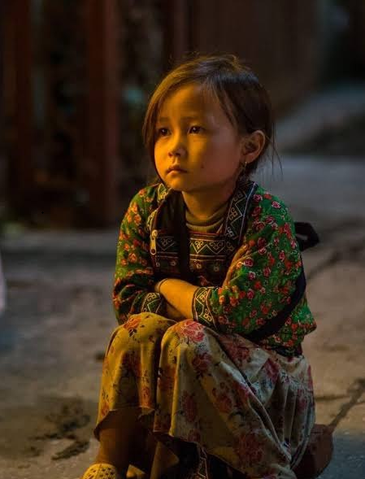
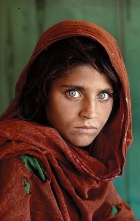
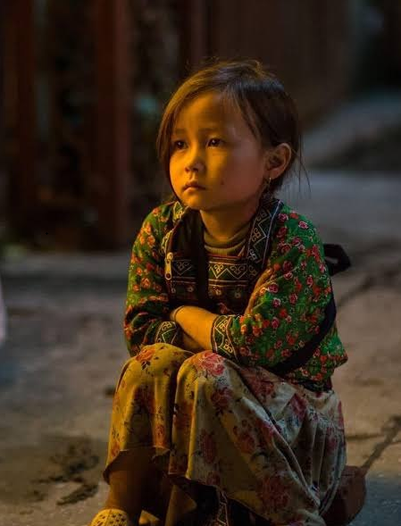
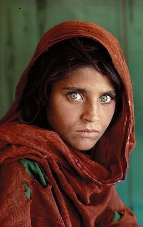

Cultural Cities of Afghanistan
Welcome to our Afghanistan Culture Website. This website is designed to introduce Afghanistan, a country with a long history and a rich cultural background. On this site, you will find useful information about Afghan traditions, customs, and daily life. We present details about traditional food, local clothing, cultural festivals, and important historical and cultural landmarks. The website also introduces famous cities from different regions of Afghanistan, highlighting their unique cultural characteristics. Each section is created to help visitors better understand the diversity of Afghan culture and the lifestyle of its people. This project is developed for educational purposes and aims to provide clear and simple information. We hope this website helps visitors gain knowledge about Afghanistan and appreciate its cultural heritage.
 



Famous Cities
What do you know about famous cities of Afghanistan?
Afghanistan is a landlocked country in Central and South Asia with a rich history that spans thousands
of
years.
Due to its location along ancient trade routes such as the Silk Road, Afghanistan has been influenced by
many
civilizations, making it one of the most culturally diverse
countries in the region.
Cultural Diversity
Afghanistan is home to many ethnic groups, including Pashtuns, Tajiks, Hazaras, Uzbeks, Turkmen, and
Baluch.
Languages commonly spoken include Dari (Persian), Pashto, Uzbeki, and Turkmen.
Bamyan
Bamyan is a historic city located in central Afghanistan. It is famous for its beautiful mountains, peaceful valleys, and rich cultural heritage. Bamyan is well known for the ancient Buddha statues, which were once among the largest in the world. The city has a long history connected to the Silk Road and is an important symbol of Afghan history and culture. Today, Bamyan is also known for its natural beauty and traditional lifestyle.The Bamiyan Buddhas were two monumental statues of standing Buddha carved into the cliffs of the Bamiyan valley in central Afghanistan. They were destroyed in 2001, but remain a symbol of Afghanistan’s rich cultural heritage.
Balkh
Balkh is a province in northern Afghanistan, historically known as one of the oldest cities in the region. It has a rich cultural and historical significance, often called the "Mother of Cities" because of its long history. Balkh was an important center for trade, religion, and learning in ancient times, especially during the Buddhist and Islamic periods. Today, the province is famous for its historical sites, cultural heritage, and its capital, Mazar-i-Sharif, which is the main economic and cultural hub of the province.